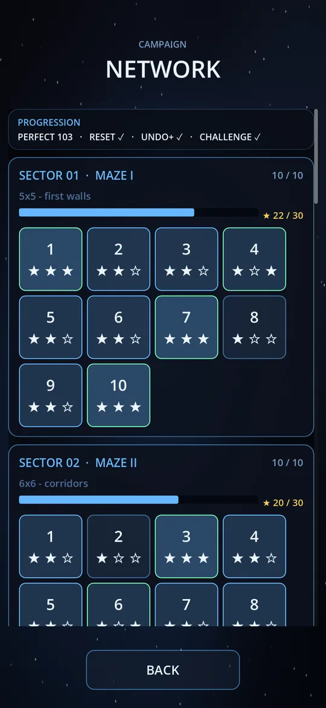
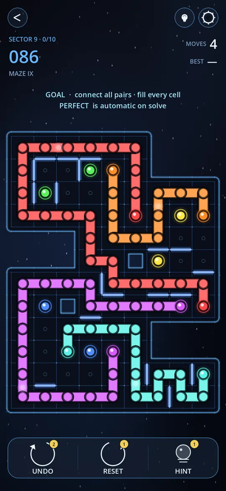
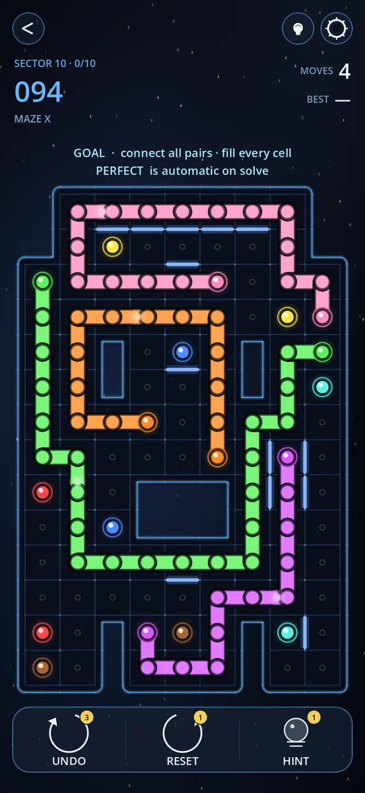

📅 5 November 2026 · ⏱ 5 min read · ✍️ Grounded Studio
For a year, every Circuit Trace board was a square. A 5×5, a 7×7, a 9×9: you could see the whole thing at a glance, and the edges were always where you expected them.
Labyrinth breaks that. It's a new pack of 100 levels where the board itself is part of the puzzle. It's free, and you'll find it under GAME MODES → LABYRINTH.



The rules are the ones you know: connect each pair of matching dots, never cross another line, and fill the board. Labyrinth adds two things.
That sounds small. In practice it changes everything, because flow puzzles are all about which cells can reach which. Take away one connection and a colour that had three ways to go suddenly has one.
The pack starts gently and ends big. Each sector adds a bit of size and a bit of difficulty:
The first four sectors are won as soon as every pair is connected; filling the board on top of that earns you PERFECT. From sector 5 every cell has to be filled. Levels unlock one by one, so you always know what's next.
This was the rule we cared most about. Each Labyrinth level has exactly one solution. That matters more than it sounds: it means you never have to guess. If you're stuck, there's always a cell somewhere that can only go one way. Find it, and the next step opens up.
The walls are what make that possible. Wherever a board could be solved in two ways, a wall closes off the shortcut. So when you see a wall, it's not decoration. It's there because without it, the puzzle would have a second answer.
💡 Read the walls first. Before you draw anything, look at where the walls are and ask why they're there. A wall usually blocks the route that looks most obvious, which tells you which way a line really has to go.
After 500 levels on square boards, we wanted something that felt different in your hands, not just harder. Shaped boards do that. The moment the edge of the board stops being a straight line, you start looking at the puzzle in a new way.
Labyrinth is also the first pack built entirely with the new puzzle solver we wrote about in Why our puzzles got harder. Every level was rated on how much thinking it takes, so the difficulty really does climb from MAZE I to MAZE X.
See all the ways to play on the Game Modes page, or update Circuit Trace and open GAME MODES → LABYRINTH.